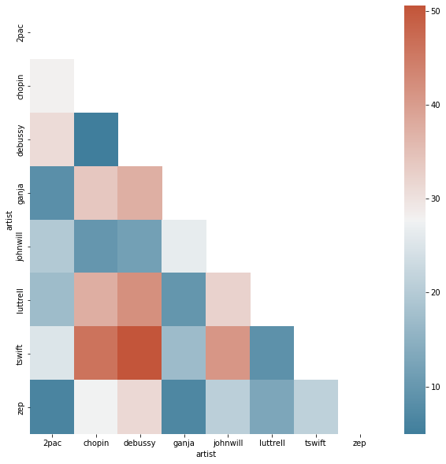

Python Foundations
X1: The Spotify API¶
Instructor: Wesley Beckner
Contact: wesleybeckner@gmail.com
For this workbook we're going to use the spotipy library to access the Spotify Web API!
Install and import libraries¶
First we will need to install it:
!pip install spotipy
Collecting spotipy
Downloading spotipy-2.19.0-py3-none-any.whl (27 kB)
Requirement already satisfied: six>=1.15.0 in /usr/local/lib/python3.7/dist-packages (from spotipy) (1.15.0)
Collecting urllib3>=1.26.0
Downloading urllib3-1.26.8-py2.py3-none-any.whl (138 kB)
[K |████████████████████████████████| 138 kB 14.7 MB/s
[?25hCollecting requests>=2.25.0
Downloading requests-2.27.1-py2.py3-none-any.whl (63 kB)
[K |████████████████████████████████| 63 kB 687 kB/s
[?25hRequirement already satisfied: charset-normalizer~=2.0.0 in /usr/local/lib/python3.7/dist-packages (from requests>=2.25.0->spotipy) (2.0.11)
Requirement already satisfied: certifi>=2017.4.17 in /usr/local/lib/python3.7/dist-packages (from requests>=2.25.0->spotipy) (2021.10.8)
Requirement already satisfied: idna<4,>=2.5 in /usr/local/lib/python3.7/dist-packages (from requests>=2.25.0->spotipy) (2.10)
Installing collected packages: urllib3, requests, spotipy
Attempting uninstall: urllib3
Found existing installation: urllib3 1.24.3
Uninstalling urllib3-1.24.3:
Successfully uninstalled urllib3-1.24.3
Attempting uninstall: requests
Found existing installation: requests 2.23.0
Uninstalling requests-2.23.0:
Successfully uninstalled requests-2.23.0
[31mERROR: pip's dependency resolver does not currently take into account all the packages that are installed. This behaviour is the source of the following dependency conflicts.
google-colab 1.0.0 requires requests~=2.23.0, but you have requests 2.27.1 which is incompatible.
datascience 0.10.6 requires folium==0.2.1, but you have folium 0.8.3 which is incompatible.[0m
Successfully installed requests-2.27.1 spotipy-2.19.0 urllib3-1.26.8
And then import
from spotipy import client
import spotipy
from spotipy.oauth2 import SpotifyClientCredentials, SpotifyOAuth
import sys
import pandas as pd
import numpy as np
import matplotlib.pyplot as plt
Setup developer account¶
You'll need to visit this link to setup a developer account, then fill in your authorization information below
SPOTIPY_CLIENT_ID = ""
SPOTIPY_CLIENT_SECRET = ""
Top 10 tracks of an artist¶
We can grab the first 10 tracks of Led Zepplin:
alist = ['elephant', 'pinecone', 'toothbrush']
for index, item in enumerate(alist):
print(str(index) + ' ' + item)
0 elephant
1 pinecone
2 toothbrush
lz_uri = 'spotify:artist:36QJpDe2go2KgaRleHCDTp'
spotify = spotipy.Spotify(client_credentials_manager=SpotifyClientCredentials(
client_id=SPOTIPY_CLIENT_ID,
client_secret=SPOTIPY_CLIENT_SECRET
))
results = spotify.artist_top_tracks(lz_uri)
ids = []
for i, track in enumerate(results['tracks']):
ids.append(track['id'])
if i < 10:
print('track : ' + track['name'])
print('audio : ' + track['preview_url'])
print('cover art: ' + track['album']['images'][0]['url'])
print()
track : Stairway to Heaven - Remaster
audio : https://p.scdn.co/mp3-preview/8226164717312bc411f8635580562d67e191a754?cid=93cef3f9255042d7854a6014e0929504
cover art: https://i.scdn.co/image/ab67616d0000b273c8a11e48c91a982d086afc69
track : Immigrant Song - Remaster
audio : https://p.scdn.co/mp3-preview/8455599677a13017978dcd3f4b210937f0a16bcb?cid=93cef3f9255042d7854a6014e0929504
cover art: https://i.scdn.co/image/ab67616d0000b27390a50cfe99a4c19ff3cbfbdb
track : Whole Lotta Love - 1990 Remaster
audio : https://p.scdn.co/mp3-preview/ce11b19a4d2de9976d7626df0717d0073863909c?cid=93cef3f9255042d7854a6014e0929504
cover art: https://i.scdn.co/image/ab67616d0000b273fc4f17340773c6c3579fea0d
track : Black Dog - Remaster
audio : https://p.scdn.co/mp3-preview/9b76619fd9d563a48d38cc90ca00c3008327b52e?cid=93cef3f9255042d7854a6014e0929504
cover art: https://i.scdn.co/image/ab67616d0000b273c8a11e48c91a982d086afc69
track : Kashmir - Remaster
audio : https://p.scdn.co/mp3-preview/f3ca68c9ceaa3435d5bd55c0199ba0b09b916cce?cid=93cef3f9255042d7854a6014e0929504
cover art: https://i.scdn.co/image/ab67616d0000b273765b0617b572bdd1dbdc7d8e
track : Ramble On - 1990 Remaster
audio : https://p.scdn.co/mp3-preview/83383aceb01ea27b0bffdedfaebe55e29b33aca2?cid=93cef3f9255042d7854a6014e0929504
cover art: https://i.scdn.co/image/ab67616d0000b273fc4f17340773c6c3579fea0d
track : Rock and Roll - Remaster
audio : https://p.scdn.co/mp3-preview/e7ea8a13f7caf6942c5447e9cd96aac2a076d85a?cid=93cef3f9255042d7854a6014e0929504
cover art: https://i.scdn.co/image/ab67616d0000b273c8a11e48c91a982d086afc69
track : Going to California - Remaster
audio : https://p.scdn.co/mp3-preview/4bdae56c6a9f7a8ec42b753cb7bea2c77ec68f1e?cid=93cef3f9255042d7854a6014e0929504
cover art: https://i.scdn.co/image/ab67616d0000b273c8a11e48c91a982d086afc69
track : Good Times Bad Times - 1993 Remaster
audio : https://p.scdn.co/mp3-preview/c1f024eb57b569b926c8e68cab0a6056dc7d9654?cid=93cef3f9255042d7854a6014e0929504
cover art: https://i.scdn.co/image/ab67616d0000b2736f2f499c1df1f210c9b34b32
track : D'yer Mak'er - Remaster
audio : https://p.scdn.co/mp3-preview/863a26744fa4389f1dc61557133df3453be82d7b?cid=93cef3f9255042d7854a6014e0929504
cover art: https://i.scdn.co/image/ab67616d0000b2731816adce1d49e35d3ce9a1d1
the top tracks API only gives the top 10 tracks by an artist:
len(ids)
10
ids
['5CQ30WqJwcep0pYcV4AMNc',
'78lgmZwycJ3nzsdgmPPGNx',
'0hCB0YR03f6AmQaHbwWDe8',
'3qT4bUD1MaWpGrTwcvguhb',
'6Vjk8MNXpQpi0F4BefdTyq',
'3MODES4TNtygekLl146Dxd',
'4PRGxHpCpF2yoOHYKQIEwD',
'70gbuMqwNBE2Y5rkQJE9By',
'0QwZfbw26QeUoIy82Z2jYp',
'4ItljeeAXtHsnsnnQojaO2']
Spotify has an audio features API that can be used for ML or data visualization:
features = spotify.audio_features(ids)
features
[{'acousticness': 0.58,
'analysis_url': 'https://api.spotify.com/v1/audio-analysis/5CQ30WqJwcep0pYcV4AMNc',
'danceability': 0.338,
'duration_ms': 482830,
'energy': 0.34,
'id': '5CQ30WqJwcep0pYcV4AMNc',
'instrumentalness': 0.0032,
'key': 9,
'liveness': 0.116,
'loudness': -12.049,
'mode': 0,
'speechiness': 0.0339,
'tempo': 82.433,
'time_signature': 4,
'track_href': 'https://api.spotify.com/v1/tracks/5CQ30WqJwcep0pYcV4AMNc',
'type': 'audio_features',
'uri': 'spotify:track:5CQ30WqJwcep0pYcV4AMNc',
'valence': 0.197},
{'acousticness': 0.013,
'analysis_url': 'https://api.spotify.com/v1/audio-analysis/78lgmZwycJ3nzsdgmPPGNx',
'danceability': 0.564,
'duration_ms': 146250,
'energy': 0.932,
'id': '78lgmZwycJ3nzsdgmPPGNx',
'instrumentalness': 0.169,
'key': 11,
'liveness': 0.349,
'loudness': -10.068,
'mode': 1,
'speechiness': 0.0554,
'tempo': 112.937,
'time_signature': 4,
'track_href': 'https://api.spotify.com/v1/tracks/78lgmZwycJ3nzsdgmPPGNx',
'type': 'audio_features',
'uri': 'spotify:track:78lgmZwycJ3nzsdgmPPGNx',
'valence': 0.619},
{'acousticness': 0.0484,
'analysis_url': 'https://api.spotify.com/v1/audio-analysis/0hCB0YR03f6AmQaHbwWDe8',
'danceability': 0.412,
'duration_ms': 333893,
'energy': 0.902,
'id': '0hCB0YR03f6AmQaHbwWDe8',
'instrumentalness': 0.131,
'key': 9,
'liveness': 0.405,
'loudness': -11.6,
'mode': 1,
'speechiness': 0.405,
'tempo': 89.74,
'time_signature': 4,
'track_href': 'https://api.spotify.com/v1/tracks/0hCB0YR03f6AmQaHbwWDe8',
'type': 'audio_features',
'uri': 'spotify:track:0hCB0YR03f6AmQaHbwWDe8',
'valence': 0.422},
{'acousticness': 0.396,
'analysis_url': 'https://api.spotify.com/v1/audio-analysis/3qT4bUD1MaWpGrTwcvguhb',
'danceability': 0.437,
'duration_ms': 295387,
'energy': 0.864,
'id': '3qT4bUD1MaWpGrTwcvguhb',
'instrumentalness': 0.0314,
'key': 4,
'liveness': 0.242,
'loudness': -7.842,
'mode': 0,
'speechiness': 0.0904,
'tempo': 81.394,
'time_signature': 4,
'track_href': 'https://api.spotify.com/v1/tracks/3qT4bUD1MaWpGrTwcvguhb',
'type': 'audio_features',
'uri': 'spotify:track:3qT4bUD1MaWpGrTwcvguhb',
'valence': 0.749},
{'acousticness': 0.452,
'analysis_url': 'https://api.spotify.com/v1/audio-analysis/6Vjk8MNXpQpi0F4BefdTyq',
'danceability': 0.483,
'duration_ms': 517125,
'energy': 0.615,
'id': '6Vjk8MNXpQpi0F4BefdTyq',
'instrumentalness': 0.000414,
'key': 2,
'liveness': 0.0512,
'loudness': -8.538,
'mode': 1,
'speechiness': 0.0497,
'tempo': 80.576,
'time_signature': 3,
'track_href': 'https://api.spotify.com/v1/tracks/6Vjk8MNXpQpi0F4BefdTyq',
'type': 'audio_features',
'uri': 'spotify:track:6Vjk8MNXpQpi0F4BefdTyq',
'valence': 0.594},
{'acousticness': 0.072,
'analysis_url': 'https://api.spotify.com/v1/audio-analysis/3MODES4TNtygekLl146Dxd',
'danceability': 0.468,
'duration_ms': 263333,
'energy': 0.607,
'id': '3MODES4TNtygekLl146Dxd',
'instrumentalness': 0.000852,
'key': 9,
'liveness': 0.225,
'loudness': -11.367,
'mode': 1,
'speechiness': 0.0336,
'tempo': 98.429,
'time_signature': 4,
'track_href': 'https://api.spotify.com/v1/tracks/3MODES4TNtygekLl146Dxd',
'type': 'audio_features',
'uri': 'spotify:track:3MODES4TNtygekLl146Dxd',
'valence': 0.886},
{'acousticness': 0.000582,
'analysis_url': 'https://api.spotify.com/v1/audio-analysis/4PRGxHpCpF2yoOHYKQIEwD',
'danceability': 0.317,
'duration_ms': 220561,
'energy': 0.887,
'id': '4PRGxHpCpF2yoOHYKQIEwD',
'instrumentalness': 0.00258,
'key': 9,
'liveness': 0.0891,
'loudness': -7.292,
'mode': 1,
'speechiness': 0.0375,
'tempo': 169.613,
'time_signature': 4,
'track_href': 'https://api.spotify.com/v1/tracks/4PRGxHpCpF2yoOHYKQIEwD',
'type': 'audio_features',
'uri': 'spotify:track:4PRGxHpCpF2yoOHYKQIEwD',
'valence': 0.871},
{'acousticness': 0.943,
'analysis_url': 'https://api.spotify.com/v1/audio-analysis/70gbuMqwNBE2Y5rkQJE9By',
'danceability': 0.503,
'duration_ms': 212161,
'energy': 0.265,
'id': '70gbuMqwNBE2Y5rkQJE9By',
'instrumentalness': 0.045,
'key': 2,
'liveness': 0.0867,
'loudness': -15.913,
'mode': 1,
'speechiness': 0.0333,
'tempo': 78.044,
'time_signature': 4,
'track_href': 'https://api.spotify.com/v1/tracks/70gbuMqwNBE2Y5rkQJE9By',
'type': 'audio_features',
'uri': 'spotify:track:70gbuMqwNBE2Y5rkQJE9By',
'valence': 0.522},
{'acousticness': 0.0382,
'analysis_url': 'https://api.spotify.com/v1/audio-analysis/0QwZfbw26QeUoIy82Z2jYp',
'danceability': 0.476,
'duration_ms': 166267,
'energy': 0.717,
'id': '0QwZfbw26QeUoIy82Z2jYp',
'instrumentalness': 7.61e-05,
'key': 9,
'liveness': 0.0818,
'loudness': -9.192,
'mode': 1,
'speechiness': 0.0949,
'tempo': 93.584,
'time_signature': 4,
'track_href': 'https://api.spotify.com/v1/tracks/0QwZfbw26QeUoIy82Z2jYp',
'type': 'audio_features',
'uri': 'spotify:track:0QwZfbw26QeUoIy82Z2jYp',
'valence': 0.753},
{'acousticness': 0.262,
'analysis_url': 'https://api.spotify.com/v1/audio-analysis/4ItljeeAXtHsnsnnQojaO2',
'danceability': 0.525,
'duration_ms': 262748,
'energy': 0.929,
'id': '4ItljeeAXtHsnsnnQojaO2',
'instrumentalness': 2.9e-05,
'key': 9,
'liveness': 0.0754,
'loudness': -8.56,
'mode': 0,
'speechiness': 0.0784,
'tempo': 163.503,
'time_signature': 4,
'track_href': 'https://api.spotify.com/v1/tracks/4ItljeeAXtHsnsnnQojaO2',
'type': 'audio_features',
'uri': 'spotify:track:4ItljeeAXtHsnsnnQojaO2',
'valence': 0.556}]
pd.DataFrame(features)
| danceability | energy | key | loudness | mode | speechiness | acousticness | instrumentalness | liveness | valence | tempo | type | id | uri | track_href | analysis_url | duration_ms | time_signature | |
|---|---|---|---|---|---|---|---|---|---|---|---|---|---|---|---|---|---|---|
| 0 | 0.338 | 0.340 | 9 | -12.049 | 0 | 0.0339 | 0.580000 | 0.003200 | 0.1160 | 0.197 | 82.433 | audio_features | 5CQ30WqJwcep0pYcV4AMNc | spotify:track:5CQ30WqJwcep0pYcV4AMNc | https://api.spotify.com/v1/tracks/5CQ30WqJwcep... | https://api.spotify.com/v1/audio-analysis/5CQ3... | 482830 | 4 |
| 1 | 0.564 | 0.932 | 11 | -10.068 | 1 | 0.0554 | 0.013000 | 0.169000 | 0.3490 | 0.619 | 112.937 | audio_features | 78lgmZwycJ3nzsdgmPPGNx | spotify:track:78lgmZwycJ3nzsdgmPPGNx | https://api.spotify.com/v1/tracks/78lgmZwycJ3n... | https://api.spotify.com/v1/audio-analysis/78lg... | 146250 | 4 |
| 2 | 0.412 | 0.902 | 9 | -11.600 | 1 | 0.4050 | 0.048400 | 0.131000 | 0.4050 | 0.422 | 89.740 | audio_features | 0hCB0YR03f6AmQaHbwWDe8 | spotify:track:0hCB0YR03f6AmQaHbwWDe8 | https://api.spotify.com/v1/tracks/0hCB0YR03f6A... | https://api.spotify.com/v1/audio-analysis/0hCB... | 333893 | 4 |
| 3 | 0.437 | 0.864 | 4 | -7.842 | 0 | 0.0904 | 0.396000 | 0.031400 | 0.2420 | 0.749 | 81.394 | audio_features | 3qT4bUD1MaWpGrTwcvguhb | spotify:track:3qT4bUD1MaWpGrTwcvguhb | https://api.spotify.com/v1/tracks/3qT4bUD1MaWp... | https://api.spotify.com/v1/audio-analysis/3qT4... | 295387 | 4 |
| 4 | 0.483 | 0.615 | 2 | -8.538 | 1 | 0.0497 | 0.452000 | 0.000414 | 0.0512 | 0.594 | 80.576 | audio_features | 6Vjk8MNXpQpi0F4BefdTyq | spotify:track:6Vjk8MNXpQpi0F4BefdTyq | https://api.spotify.com/v1/tracks/6Vjk8MNXpQpi... | https://api.spotify.com/v1/audio-analysis/6Vjk... | 517125 | 3 |
| 5 | 0.468 | 0.607 | 9 | -11.367 | 1 | 0.0336 | 0.072000 | 0.000852 | 0.2250 | 0.886 | 98.429 | audio_features | 3MODES4TNtygekLl146Dxd | spotify:track:3MODES4TNtygekLl146Dxd | https://api.spotify.com/v1/tracks/3MODES4TNtyg... | https://api.spotify.com/v1/audio-analysis/3MOD... | 263333 | 4 |
| 6 | 0.317 | 0.887 | 9 | -7.292 | 1 | 0.0375 | 0.000582 | 0.002580 | 0.0891 | 0.871 | 169.613 | audio_features | 4PRGxHpCpF2yoOHYKQIEwD | spotify:track:4PRGxHpCpF2yoOHYKQIEwD | https://api.spotify.com/v1/tracks/4PRGxHpCpF2y... | https://api.spotify.com/v1/audio-analysis/4PRG... | 220561 | 4 |
| 7 | 0.503 | 0.265 | 2 | -15.913 | 1 | 0.0333 | 0.943000 | 0.045000 | 0.0867 | 0.522 | 78.044 | audio_features | 70gbuMqwNBE2Y5rkQJE9By | spotify:track:70gbuMqwNBE2Y5rkQJE9By | https://api.spotify.com/v1/tracks/70gbuMqwNBE2... | https://api.spotify.com/v1/audio-analysis/70gb... | 212161 | 4 |
| 8 | 0.476 | 0.717 | 9 | -9.192 | 1 | 0.0949 | 0.038200 | 0.000076 | 0.0818 | 0.753 | 93.584 | audio_features | 0QwZfbw26QeUoIy82Z2jYp | spotify:track:0QwZfbw26QeUoIy82Z2jYp | https://api.spotify.com/v1/tracks/0QwZfbw26QeU... | https://api.spotify.com/v1/audio-analysis/0QwZ... | 166267 | 4 |
| 9 | 0.525 | 0.929 | 9 | -8.560 | 0 | 0.0784 | 0.262000 | 0.000029 | 0.0754 | 0.556 | 163.503 | audio_features | 4ItljeeAXtHsnsnnQojaO2 | spotify:track:4ItljeeAXtHsnsnnQojaO2 | https://api.spotify.com/v1/tracks/4ItljeeAXtHs... | https://api.spotify.com/v1/audio-analysis/4Itl... | 262748 | 4 |
Add additional artists¶
Let's get some other artist data to compare with:
artist_dict = {'zep': '36QJpDe2go2KgaRleHCDTp',
'tswift': '06HL4z0CvFAxyc27GXpf02',
'debussy': '1Uff91EOsvd99rtAupatMP',
'luttrell': '4EOyJnoiiOJ4vuNhSBArB2',
'johnwill': '3dRfiJ2650SZu6GbydcHNb'}
color_dict = {'zep': 'tab:blue',
'tswift': 'tab:green',
'debussy': 'tab:orange',
'luttrell': 'tab:red',
'johnwill': 'tab:pink'}
for artist, uri in artist_dict.items():
print(artist + ' ' + uri)
zep 36QJpDe2go2KgaRleHCDTp
tswift 06HL4z0CvFAxyc27GXpf02
debussy 1Uff91EOsvd99rtAupatMP
luttrell 4EOyJnoiiOJ4vuNhSBArB2
johnwill 3dRfiJ2650SZu6GbydcHNb
ids = []
artists = []
colors = []
for artist, uri in artist_dict.items():
results = spotify.artist_top_tracks('spotify:artist:' + uri)
for i, track in enumerate(results['tracks']):
ids.append(track['id'])
artists.append(artist)
colors.append(color_dict[artist])
if i < 1:
print('track : ' + track['name'])
print('cover art: ' + track['album']['images'][0]['url'])
print()
track : Stairway to Heaven - Remaster
cover art: https://i.scdn.co/image/ab67616d0000b273c8a11e48c91a982d086afc69
track : All Too Well (10 Minute Version) (Taylor's Version) (From The Vault)
cover art: https://i.scdn.co/image/ab67616d0000b273318443aab3531a0558e79a4d
track : Clair de Lune, L. 32
cover art: https://i.scdn.co/image/ab67616d0000b2736e7bb273ff9cb1de1e1d4d0a
track : Twin Souls
cover art: https://i.scdn.co/image/ab67616d0000b2735dea3da9d2751a0fa7b23fd3
track : Carol of the Bells
cover art: https://i.scdn.co/image/ab67616d0000b273a68c06155b7c3cf82b00cb96
features = spotify.audio_features(ids)
df = pd.DataFrame(features)
df['artist'] = artists
df['color'] = colors
feat_names = df.columns[:11]
print(feat_names)
Index(['danceability', 'energy', 'key', 'loudness', 'mode', 'speechiness',
'acousticness', 'instrumentalness', 'liveness', 'valence', 'tempo'],
dtype='object')
df.head()
| danceability | energy | key | loudness | mode | speechiness | acousticness | instrumentalness | liveness | valence | tempo | type | id | uri | track_href | analysis_url | duration_ms | time_signature | artist | color | |
|---|---|---|---|---|---|---|---|---|---|---|---|---|---|---|---|---|---|---|---|---|
| 0 | 0.338 | 0.340 | 9 | -12.049 | 0 | 0.0339 | 0.5800 | 0.003200 | 0.1160 | 0.197 | 82.433 | audio_features | 5CQ30WqJwcep0pYcV4AMNc | spotify:track:5CQ30WqJwcep0pYcV4AMNc | https://api.spotify.com/v1/tracks/5CQ30WqJwcep... | https://api.spotify.com/v1/audio-analysis/5CQ3... | 482830 | 4 | zep | tab:blue |
| 1 | 0.564 | 0.932 | 11 | -10.068 | 1 | 0.0554 | 0.0130 | 0.169000 | 0.3490 | 0.619 | 112.937 | audio_features | 78lgmZwycJ3nzsdgmPPGNx | spotify:track:78lgmZwycJ3nzsdgmPPGNx | https://api.spotify.com/v1/tracks/78lgmZwycJ3n... | https://api.spotify.com/v1/audio-analysis/78lg... | 146250 | 4 | zep | tab:blue |
| 2 | 0.412 | 0.902 | 9 | -11.600 | 1 | 0.4050 | 0.0484 | 0.131000 | 0.4050 | 0.422 | 89.740 | audio_features | 0hCB0YR03f6AmQaHbwWDe8 | spotify:track:0hCB0YR03f6AmQaHbwWDe8 | https://api.spotify.com/v1/tracks/0hCB0YR03f6A... | https://api.spotify.com/v1/audio-analysis/0hCB... | 333893 | 4 | zep | tab:blue |
| 3 | 0.437 | 0.864 | 4 | -7.842 | 0 | 0.0904 | 0.3960 | 0.031400 | 0.2420 | 0.749 | 81.394 | audio_features | 3qT4bUD1MaWpGrTwcvguhb | spotify:track:3qT4bUD1MaWpGrTwcvguhb | https://api.spotify.com/v1/tracks/3qT4bUD1MaWp... | https://api.spotify.com/v1/audio-analysis/3qT4... | 295387 | 4 | zep | tab:blue |
| 4 | 0.483 | 0.615 | 2 | -8.538 | 1 | 0.0497 | 0.4520 | 0.000414 | 0.0512 | 0.594 | 80.576 | audio_features | 6Vjk8MNXpQpi0F4BefdTyq | spotify:track:6Vjk8MNXpQpi0F4BefdTyq | https://api.spotify.com/v1/tracks/6Vjk8MNXpQpi... | https://api.spotify.com/v1/audio-analysis/6Vjk... | 517125 | 3 | zep | tab:blue |
Visualize the audio features¶
# <groupby>.<select>.<agg operation>
df.groupby('artist')[feat_names].mean()
| danceability | energy | key | loudness | mode | speechiness | acousticness | instrumentalness | liveness | valence | tempo | |
|---|---|---|---|---|---|---|---|---|---|---|---|
| artist | |||||||||||
| debussy | 0.2868 | 0.019716 | 3.6 | -30.3510 | 0.8 | 0.04209 | 0.990800 | 0.927000 | 0.07817 | 0.07747 | 81.2996 |
| johnwill | 0.2783 | 0.151770 | 3.9 | -20.4347 | 0.5 | 0.03766 | 0.903000 | 0.615920 | 0.18085 | 0.19182 | 87.2151 |
| luttrell | 0.5310 | 0.706000 | 4.5 | -9.3468 | 0.7 | 0.03504 | 0.127682 | 0.669259 | 0.18714 | 0.16701 | 117.5059 |
| tswift | 0.5073 | 0.621700 | 4.2 | -6.4014 | 0.9 | 0.05926 | 0.198158 | 0.000263 | 0.13591 | 0.40550 | 125.7815 |
| zep | 0.4523 | 0.705800 | 7.3 | -10.2421 | 0.7 | 0.09121 | 0.280518 | 0.038355 | 0.17212 | 0.61690 | 105.0253 |
fig, ax = plt.subplots(figsize=(10,10))
df.groupby('artist')[feat_names].mean().plot(kind='barh', ax=ax)
<matplotlib.axes._subplots.AxesSubplot at 0x7f7e11316ad0>

we see that it is difficult to see all the features together at once. One tactic may be to normalize the features
# (x - x.min()) / (x.max() - x.min())
scaled = df[feat_names].apply(lambda x: (x - x.mean()) / (x.std()))
scaled['artist'] = df['artist']
fig, ax = plt.subplots(figsize=(10,10))
scaled.groupby('artist')[feat_names].mean().plot(kind='barh', ax=ax)
<matplotlib.axes._subplots.AxesSubplot at 0x7f9c3412a390>

We can then investigate if these scaled and centered features separate out under a dimensionality reduction (a topic we explore in unsupervised learning):
scaled[feat_names].head()
| danceability | energy | key | loudness | mode | speechiness | acousticness | instrumentalness | liveness | valence | tempo | |
|---|---|---|---|---|---|---|---|---|---|---|---|
| 0 | -0.469349 | -0.300769 | 1.218214 | 0.351423 | -1.587451 | -0.342620 | 0.186938 | -1.068262 | -0.305866 | -0.356202 | -0.626640 |
| 1 | 0.980922 | 1.462203 | 1.784825 | 0.561988 | 0.617342 | 0.042005 | -1.138510 | -0.671989 | 1.739793 | 1.230425 | 0.286535 |
| 2 | 0.005519 | 1.372864 | 1.218214 | 0.399148 | 0.617342 | 6.296175 | -1.055757 | -0.762811 | 2.231454 | 0.489749 | -0.407896 |
| 3 | 0.165947 | 1.259700 | -0.198314 | 0.798594 | -1.587451 | 0.668137 | -0.243189 | -1.000862 | 0.800371 | 1.719197 | -0.657743 |
| 4 | 0.461135 | 0.518179 | -0.764925 | 0.724615 | 0.617342 | -0.059966 | -0.112281 | -1.074920 | -0.874787 | 1.136431 | -0.682231 |
from sklearn.decomposition import PCA
pca = PCA(n_components=2)
pca.fit(scaled[feat_names])
PCA(n_components=2)
color_dict
{'debussy': 'tab:orange',
'johnwill': 'tab:pink',
'luttrell': 'tab:red',
'tswift': 'tab:green',
'zep': 'tab:blue'}
X_pca = pca.transform(df[feat_names])
plt.scatter(X_pca[:, 0], X_pca[:, 1], alpha=0.8, c=df['color'].values,
edgecolor='grey')
plt.xlabel('First PC')
plt.ylabel('Second PC')
Text(0, 0.5, 'Second PC')

🏋️♀️ Exercises¶
🕵️♀️ Exercise 1: Find artist urls and build dataset¶
a. Navigate to the Spotify web application, pick 5 artists and update the the dictionary below
import matplotlib.colors as mcolors
mcolors.TABLEAU_COLORS
OrderedDict([('tab:blue', '#1f77b4'),
('tab:orange', '#ff7f0e'),
('tab:green', '#2ca02c'),
('tab:red', '#d62728'),
('tab:purple', '#9467bd'),
('tab:brown', '#8c564b'),
('tab:pink', '#e377c2'),
('tab:gray', '#7f7f7f'),
('tab:olive', '#bcbd22'),
('tab:cyan', '#17becf')])
# Cell for 1.a
artist_dict = {'zep': '36QJpDe2go2KgaRleHCDTp',
'tswift': '06HL4z0CvFAxyc27GXpf02',
'debussy': '1Uff91EOsvd99rtAupatMP',
'luttrell': '4EOyJnoiiOJ4vuNhSBArB2',
'johnwill': '3dRfiJ2650SZu6GbydcHNb',
'chopin': '7y97mc3bZRFXzT2szRM4L4',
'2pac': '1ZwdS5xdxEREPySFridCfh',
'ganja': '1a6oIpEh4DGgaqgWg5xwd3'}
color_dict = {'zep': 'tab:blue',
'tswift': 'tab:green',
'debussy': 'tab:orange',
'luttrell': 'tab:red',
'johnwill': 'tab:pink',
'chopin': 'tab:brown',
'2pac': 'tab:gray',
'ganja': 'tab:purple'}
b. build feature set using spotify.artist_top_tracks('spotify:artist:' + uri) and storing the resultant track information
# Cell for 1.b
ids = []
artists = []
colors = []
for artist, uri in artist_dict.items():
results = spotify.artist_top_tracks('spotify:artist:' + uri)
for i, track in enumerate(results['tracks']):
ids.append(track['id'])
artists.append(artist)
colors.append(color_dict[artist])
if i < 1:
print('track : ' + track['name'])
print('cover art: ' + track['album']['images'][0]['url'])
print()
track : Stairway to Heaven - Remaster
cover art: https://i.scdn.co/image/ab67616d0000b273c8a11e48c91a982d086afc69
track : All Too Well (10 Minute Version) (Taylor's Version) (From The Vault)
cover art: https://i.scdn.co/image/ab67616d0000b273318443aab3531a0558e79a4d
track : Clair de Lune, L. 32
cover art: https://i.scdn.co/image/ab67616d0000b2736e7bb273ff9cb1de1e1d4d0a
track : Twin Souls
cover art: https://i.scdn.co/image/ab67616d0000b2735dea3da9d2751a0fa7b23fd3
track : Carol of the Bells
cover art: https://i.scdn.co/image/ab67616d0000b273a68c06155b7c3cf82b00cb96
track : Nocturne No. 2 in E-Flat Major, Op. 9 No. 2
cover art: https://i.scdn.co/image/ab67616d0000b27355c82855070525581e2c6fee
track : Hit 'Em Up - Single Version
cover art: https://i.scdn.co/image/ab67616d0000b273d81a092eb373ded457d94eec
track : Miss You
cover art: https://i.scdn.co/image/ab67616d0000b273bbfbb9cd91d8676f68676e59
features = spotify.audio_features(ids)
df = pd.DataFrame(features)
df['artist'] = artists
df['color'] = colors
feat_names = df.columns[:11]
print(feat_names)
Index(['danceability', 'energy', 'key', 'loudness', 'mode', 'speechiness',
'acousticness', 'instrumentalness', 'liveness', 'valence', 'tempo'],
dtype='object')
💫 Exercise 2: Visualize Features¶
a. Create a boxplot of each feature, grouped by artist (similar to example above)
# Cell for 2.a
fig, ax = plt.subplots(6, 2, figsize=(10,25))
indices = np.argwhere(ax)
for index, feature in enumerate(feat_names):
df.boxplot(by='artist', column=feature, ax=ax[indices[index][0],
indices[index][1]])
plt.tight_layout()

b. Normalize the features this time, then create the boxplot
# Cell for 2.b
scaled = df[feat_names].apply(lambda x: (x - x.mean()) / (x.std()))
scaled['artist'] = df['artist']
fig, ax = plt.subplots(6, 2, figsize=(10,25))
indices = np.argwhere(ax)
for index, feature in enumerate(feat_names):
scaled.boxplot(by='artist', column=feature, ax=ax[indices[index][0],
indices[index][1]])
plt.tight_layout()

⚖️ Exercise 3: Write a function that returns a similarity score between two artists¶
# Cell for 3
avg = df.groupby('artist')[feat_names].mean()
avg
| danceability | energy | key | loudness | mode | speechiness | acousticness | instrumentalness | liveness | valence | tempo | |
|---|---|---|---|---|---|---|---|---|---|---|---|
| artist | |||||||||||
| 2pac | 0.8102 | 0.692400 | 5.0 | -6.2682 | 0.8 | 0.18134 | 0.097199 | 0.000569 | 0.20875 | 0.62680 | 100.6579 |
| chopin | 0.3255 | 0.018298 | 4.6 | -30.1471 | 0.5 | 0.04479 | 0.988800 | 0.906600 | 0.08981 | 0.10532 | 86.1455 |
| debussy | 0.2868 | 0.019716 | 3.6 | -30.3510 | 0.8 | 0.04209 | 0.990800 | 0.927000 | 0.07817 | 0.07747 | 81.2996 |
| ganja | 0.6506 | 0.701500 | 5.2 | -5.0898 | 0.3 | 0.08868 | 0.083128 | 0.114312 | 0.12767 | 0.40886 | 108.9341 |
| johnwill | 0.2783 | 0.151770 | 3.9 | -20.4347 | 0.5 | 0.03766 | 0.903000 | 0.615920 | 0.18085 | 0.19182 | 87.2151 |
| luttrell | 0.5310 | 0.706000 | 4.5 | -9.3468 | 0.7 | 0.03504 | 0.127682 | 0.669259 | 0.18714 | 0.16701 | 117.5059 |
| tswift | 0.5073 | 0.621700 | 4.2 | -6.4014 | 0.9 | 0.05926 | 0.198158 | 0.000263 | 0.13591 | 0.40550 | 125.7815 |
| zep | 0.4523 | 0.705800 | 7.3 | -10.2421 | 0.7 | 0.09121 | 0.280518 | 0.038355 | 0.17212 | 0.61690 | 105.0253 |
x = avg.loc['2pac'].values
y = avg.loc['zep'].values
def distance(xlabel, ylabel):
x = avg.loc[xlabel].values
y = avg.loc[ylabel].values
return np.sqrt(((x-y)**2).sum())
distance('2pac', 'ganja')
8.38304605268043
distance('chopin', 'debussy')
4.9615683289484185
scores = np.zeros((avg.shape[0], avg.shape[0]))
for index, name in enumerate(avg.index):
for index2, name2 in enumerate(avg.index):
if index < 1:
print('{:.2f}'.format(distance(name, name2)) + ' ' + name + ' ' + name2 + ' ')
scores[index, index2] = distance(name,name2)
0.00 2pac 2pac
27.99 2pac chopin
30.97 2pac debussy
8.38 2pac ganja
19.61 2pac johnwill
17.16 2pac luttrell
25.14 2pac tswift
6.35 2pac zep
dists = pd.DataFrame(scores, index=avg.index, columns=avg.index)
import seaborn as sns
sns.heatmap(dists)
<matplotlib.axes._subplots.AxesSubplot at 0x7f9c32ee0190>

import numpy as np
fig, ax = plt.subplots(1, 1, figsize = (10,10))
# create a mask to white-out the upper triangle
mask = np.triu(np.ones_like(dists, dtype=bool))
# we'll want a divergent colormap for this so our eye
# is not attracted to the values close to 0
cmap = sns.diverging_palette(230, 20, as_cmap=True)
sns.heatmap(dists, mask=mask, cmap=cmap, ax=ax)
<matplotlib.axes._subplots.AxesSubplot at 0x7f9c32a1b450>
